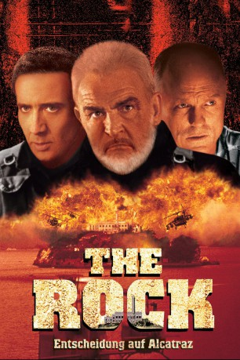

Alternativ: The Rock
Auszeichnungen: für 1 Oscars nominiert
 
 IMDB-Wertung: 7.4 / 10
IMDB-Wertung: 7.4 / 10  Metascore:
Metascore: 
Der Beatles-Fan und FBI-Bombenexperte Stanley Goodspeed wird zu einem Notfalleinsatz auf Alacatraz gerufen. Auf der Gefängnisinsel hat sich General Hummel mit einer Hand voll Söldnern verschanzt, um mit Geiseln und Giftgasraketen 100 Millionen Dollar für die Hinterbliebenen gefallener Golfkriegs-Soldaten zu erpressen. Goodspeed soll die Raketen entschärfen, doch nur der Ex-Agent Patrick Mason kennt den Weg in die Festung…
Jahr: 1996
Dauer: 136 Minuten
FSK: 12
Land: USA Studio: Buena Vista PicturesTonspuren: DTS - ,
Untertitel:
Auflösung: 1080p (1920×816) Größe: 10956 MB
Genre: Action, Abenteuer, Thriller
Regisseur:  Michael Bay
Michael Bay
Drehbuch: David Weisberg, Douglas Cook, David Weisberg, Douglas Cook, Mark Rosner
Soundtrack: Nick Glennie-Smith, Hans Zimmer
Darsteller:
 Sean Connery als John Patrick Mason
Sean Connery als John Patrick Mason Nicolas Cage als Stanley Goodspeed
Nicolas Cage als Stanley Goodspeed Ed Harris als General Francis X. Hummel
Ed Harris als General Francis X. Hummel John Spencer als F.B.I. Director Womack
John Spencer als F.B.I. Director Womack David Morse als Major Tom Baxter
David Morse als Major Tom Baxter William Forsythe als Ernest Paxton
William Forsythe als Ernest Paxton Michael Biehn als Commander Anderson
Michael Biehn als Commander Anderson John C. McGinley als Marine Captain Hendrix
John C. McGinley als Marine Captain Hendrix Gregory Sporleder als Captain Frye
Gregory Sporleder als Captain Frye Tony Todd als Captain Darrow
Tony Todd als Captain Darrow Bokeem Woodbine als Sergeant Crisp
Bokeem Woodbine als Sergeant Crisp Greg Collins als Private Gamble
Greg Collins als Private Gamble Brendan Kelly als Private Cox
Brendan Kelly als Private Cox Claire Forlani als Jade Angelou
Claire Forlani als Jade Angelou Todd Louiso als Marvin Isherwood
Todd Louiso als Marvin Isherwood Marshall R. Teague als Seal Reigert
Marshall R. Teague als Seal Reigert John Laughlin als General Peterson
John Laughlin als General Peterson Willie Garson als Francis Reynolds
Willie Garson als Francis Reynolds Raymond O'Connor als Park Ranger Bob
Raymond O'Connor als Park Ranger Bob Tom Towles als Alcatraz Park Rangers
Tom Towles als Alcatraz Park Rangers Jim Caviezel als Rear F-18 Pilot
Jim Caviezel als Rear F-18 Pilot John Enos III als Sea Stallion Pilot
John Enos III als Sea Stallion Pilot Buck Kartalian als Reverend
Buck Kartalian als Reverend Xander Berkeley als Lonner , uncredited
Xander Berkeley als Lonner , uncredited Richard Conti als Detective , uncredited
Richard Conti als Detective , uncredited Raymond Cruz als Sergeant Rojas , uncredited
Raymond Cruz als Sergeant Rojas , uncredited David Marshall Grant als Chief of Staff Hayden Sinclair , uncredited
David Marshall Grant als Chief of Staff Hayden Sinclair , uncredited Matt Gulbranson als U.S. Marine , uncredited
Matt Gulbranson als U.S. Marine , uncredited Philip Baker Hall als Chief Justice , uncredited
Philip Baker Hall als Chief Justice , uncredited Michael Rose als FBI Agent , uncredited
Michael Rose als FBI Agent , uncredited Theodore Carl Soderberg als Police Officer , uncredited
Theodore Carl Soderberg als Police Officer , uncredited Erick Vinther als Prisoner , uncredited
Erick Vinther als Prisoner , uncredited Kevin Weisman als Tourist , uncredited
Kevin Weisman als Tourist , uncreditedDatei: X:\1996\Rock - Entscheidung auf Alcatraz, The (1996, FSK12, 1920x816).mkv seit 15.01.2015
Festplatte: HD 1996-2002
 Es gibt insgesamt 78 Filme in der Gruppe '1996'
Es gibt insgesamt 78 Filme in der Gruppe '1996'